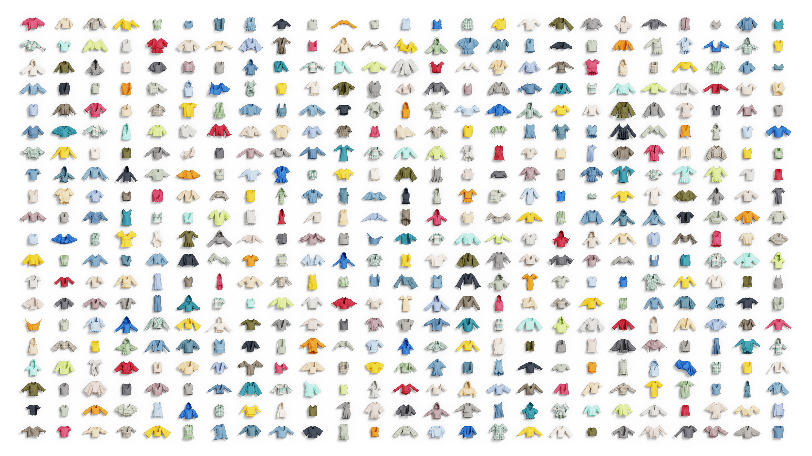

ClothDojo: Learned Data Generation and Benchmarking for Bimanual Garment Flattening and Folding
Model-generated motion. Reusable experience.
Explore the garments500 garments.

Generate more experience.
7,848generated trajectories
400 / 399garments · flatten / fold
About generation & replay
Reported throughput: approximately 1,152 trajectory executions per GPU-day on one RTX 5090 D, excluding RGB re-rendering. This measures rollout executions rather than retained successes.
The learned generator produces trajectories for new RGB training observations and compatible robots. The training set contains 3,992 flattening and 3,856 folding trajectories, covering 400 and 399 garments respectively.
The opening film shows twelve successful model-generated trajectories across six garments, using a fixed camera and two worktables. Each round compares flattening on the left and folding on the right of the same garment identity and colour. These task actions are policy rollouts, rather than human demonstrations; the policies were trained using demonstrations and corrections.
Task motion follows recorded states through successful completion at 2× replay. Both robots return to home before the next garment appears. The home return and short asset dissolves are scripted presentation; the camera stays fixed. Throughput reports trajectory execution, excluding RGB rendering.
Render learning data.
About these recordings
This preview brings together 96 recorded RGB trajectories with their original camera views and sampled appearances. Flattening is on the left; folding is on the right.
Recordings play at twice their original speed in a continuous loop. Completed trajectories briefly hold their final frame and restart outside the visible area. This is a replay of saved data.
Recording sources ↗New scenes.
New robots.
What changes, and what stays the same?
Each appearance is sampled by the same visual-layout sampler and training split used by the paper pipeline: garment material and color, table and floor material, a real background scene, and continuous light position, intensity and temperature. The sampled appearance stays fixed throughout the complete replay. Two sampled appearances are shown consecutively at 2× speed; PIPER and UR5e remain together in each scene. The paper dataset uses one RGB appearance per retained trajectory; this controlled illustration re-renders the same motion twice to expose the appearance changes.
The resource pool contains 34 garment base materials with 39 color variants, 17 table materials, 12 floor materials and eight background scenes, with configured train/test splits. Seeds, resource IDs, sampled parameters and protocol hashes are recorded in the source manifest. Showcase camera and two-workspace placement are presentation choices; no sampled appearance parameters are overridden. UR5e uses kinematic retargeting, and the post-task home return is scripted presentation choreography.
Start with the code preview.
CPU quickstart
Score a saved cloth state.
git clone --depth 1 https://github.com/clothdojo/clothdojo.github.io.git
cd clothdojo.github.io
uv sync --frozen
uv run --frozen python scripts/score_fold.pyEvaluate a policy ↗
Connect a policy server and evaluate against fixed initial states.
02Generate & render ↗
Collect trajectories and export RGB training episodes.
03Train an RGB policy ↗
Inspect datasets and train with task-matched model bundles.
Requirements & expected output
The code preview includes a CPU scoring example, one garment, and four initial states per task. Full model bundles, datasets and visual assets are forthcoming.
This example runs on CPU, with no simulator or model checkpoint. It checks a single saved state, not a complete rollout.
Expected output: frame_passes_threshold: true
Generation, rendering and training workflows require the relevant model/data/visual resources. See each guide for availability and requirements.